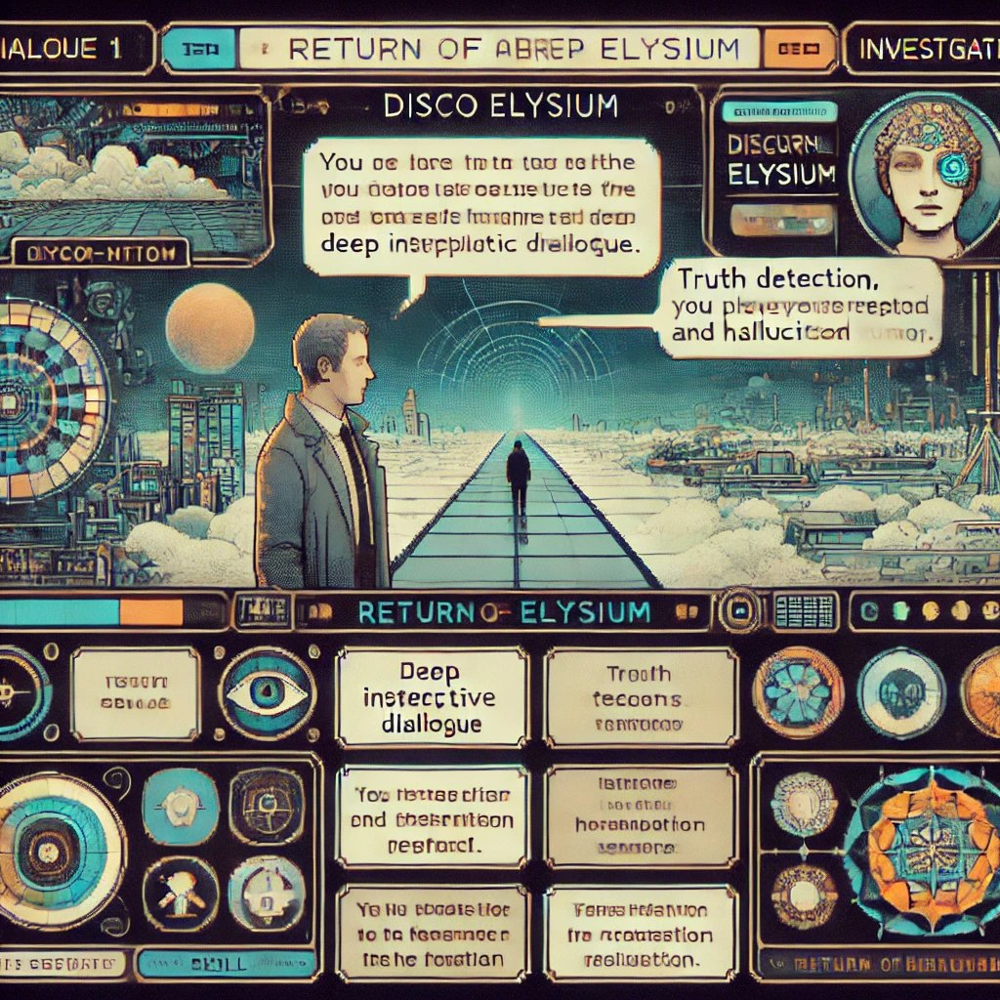

Learning & Development Portfolio
I'm Ayden Littleford — a Learning and Development Designer working across corporate training and higher education. I bridge evidence-based practice and creative technology to build experiences that develop genuine capability, not just course completions.
See My Work →About
I design learning experiences that solve real capability problems — for corporate teams building new skills and for students navigating complex ideas. Whether I'm developing a scenario-based training program, an AI literacy module, or an immersive educational narrative, I start with the same question: what does someone need to be able to do, and what's stopping them?
My practice is grounded in Adult Learning Principles, Cognitive Load Theory, and Multimedia Learning — frameworks I use not as labels but as active design tools. I bring these to life using H5P, Articulate, and Camtasia, and increasingly with AI workflows that accelerate production without compromising quality.
I work across higher education and corporate environments, and I'm particularly focused on AI literacy — helping learners and organisations build the critical thinking skills needed to use AI tools responsibly and effectively.
Featured Project
A narrative-driven micro-scenario that builds AI verification literacy through detective investigation — relevant to higher education assessment design and corporate AI governance training alike.

Interactive Experience
ELLIUM — Chapter 1
A detective narrative where you interrogate a malfunctioning AI agent. Every choice you make is a reasoning trace — there are no passive observers here.
Opens in a new tab · Works best on desktop · No login required
Launch ELLIUM →ELLIUM places learners inside a detective narrative alongside ELLE — a pedagogical agent — to interrogate a malfunctioning AI called the Auditor. The Auditor fabricates sources, corrupts citations, and produces plausible-sounding misinformation. Learners must investigate its claims, check evidence, and decide what to trust.
The core skill — verification literacy — is urgently needed across sectors. In higher education it addresses academic integrity in the age of AI. In corporate contexts it maps directly to AI governance, information quality assurance, and decision-making under uncertainty.
Rather than describing verification abstractly, ELLIUM makes learners enact it. Every branching choice is a trace of how someone thinks — making reasoning visible in a way no written assignment can.
Design Process
ELLIUM was designed iteratively — moving from a clearly identified learning need, through a series of tool and architecture decisions, to a working prototype validated by peers and lecturer feedback.
Problem
Identifying the Learning Need
First-year university students were using generative AI informally but had never been taught to verify its outputs. Research showed that 55% of GPT-3.5 references were fabricated (Walters & Wilder, 2023), yet students lacked confidence detecting hallucinations or checking sources. The need was clear: a low-stakes, engaging practice environment for verification skills — not a compliance module.
Process
Building the H5P + Twine Hybrid
H5P's Branching Scenario tool handled onboarding and learning outcomes, but proved too linear for the interrogation scene — it couldn't track learner decisions or support conditional logic. Twine was embedded via iframe to manage state-tracking and meaningful narrative branching. Unlike linear eLearning, Twine allows the learner's choices to shape the investigation — building ownership of the verification process rather than compliance with it.
Outcome
Validated Prototype, Clear Roadmap
Feedback from peers and lecturer validated the core concept — the detective narrative, cognitive alignment, and relevance of the learning need were all well-received. Constraints clarified priorities. The result was a leaner, sharper product than the original brief imagined. Next iterations will prioritise user testing with first-year students, deeper Twine mastery, and WCAG accessibility improvements.
Full Design Rationale
Justification for Choice and Design of ELLIUM
The rapid rise of generative AI has exposed longstanding structural weaknesses in traditional assessment. Because most university tasks rely on written artefacts, it is increasingly difficult to determine whether a student or a model produced the work. Lodge et al. (2025) note that detecting student use of AI is extremely difficult and argue that higher education must prioritise assessment redesign. Mulder et al. (2023) similarly contend that AI detection tools are unreliable, easily circumvented, and unlikely to achieve the capacity to assess generative AI usage. Dawson et al. (2024) extend this argument by reframing cheating as a problem of validity: if an assessment permits outsourcing, educators cannot make defensible claims about a learner's capability.
A major validity concern is the widespread fabrication and corruption of bibliographic data produced by AI systems. Walters and Wilder (2023) found that 55 percent of GPT-3.5 references and 18 percent of GPT-4 references were fabricated. Franzoni Velazquez et al. (2024) report that over half of AI-generated references do not exist. Australian data adds a further layer: Gen Z learners rely heavily on generative AI for study but lack confidence in assessing accuracy and reliability (Denejkina, 2025). Students require explicit teaching in verification literacy — how to interrogate claims, check source origins, and judge whether evidence is trustworthy.
ELLIUM was developed through constructive alignment (Biggs, 1996) and sustainable assessment principles (Boud, 2000). Verification literacy is an enduring capability that supports learners beyond a single assessment task. In ELLIUM, this is operationalised by embedding verification behaviours within an interactive micro-scenario where a malfunctioning AI agent produces questionable information. Students enact the cognitive processes being assessed rather than describing them abstractly.
The scenario is grounded in Cognitive Load Theory (CLT) and the Cognitive Theory of Multimedia Learning (CTML), which state that learning depends on managing limited cognitive capacity through active selection, organisation and integration of information (Mayer, 2024). ELLIUM segments the task into short investigative steps, maintains coherence and minimises extraneous detail. Novices are supported through a worked example delivered by ELLE, whose guidance gradually fades as learners gain confidence (Kirschner et al., 2006; Krop et al., 2023).
Leitner et al. (2023) argue that game-based learning is particularly well suited to AI-related competencies because gameplay parallels structured reasoning processes. ELLIUM employs a detective narrative that mirrors verification processes: interrogating claims, identifying inconsistencies and seeking corroboration. Serious-games research (Habgood & Ainsworth, 2011; Naul & Liu, 2020; Zhong, 2022) demonstrates that narrative-embedded decisions enhance motivation and germane processing by making cognitive work meaningful.
Batz et al. (2022) highlight that simple interaction types, plain language, uncluttered interfaces and consistent feedback improve usability for diverse learners. ELLIUM uses click-only interactions, visual clarity, and supportive prompts through ELLE. A current limitation is the lack of full keyboard navigation in H5P and Twine — a constraint of the authoring tools rather than design intent. Future iterations will adopt more accessible frameworks aligned with WCAG 2.1 standards.
The EDUCAUSE Horizon Report (2025) identifies AI literacy, verification competence and authentic assessment as future priorities. ELLIUM responds to these by embedding verification behaviours within a cognitively aligned, inclusive and AI-resilient micro-assessment that preserves validity and generates defensible evidence of learning.
2025 EDUCAUSE Horizon Report | Teaching and Learning Edition. (2025). EDUCAUSE Library. https://library.educause.edu/resources/2025/5/2025-educause-horizon-report-teaching-and-learning-edition
Arslan, P. (2012). A Review of Multimedia Learning Principles. Mersin Universitesi Egitim Fakultesi Dergisi, 8. https://doi.org/10.17860/efd.41251
Batz, V., et al. (2022). Accessible Design of Serious Games for People with Intellectual Disabilities. Proceedings of DiGRA 2022. https://doi.org/10.26503/dl.v2022i1.1372
Biggs, J. (1996). Enhancing teaching through constructive alignment. Higher Education, 32(3), 347-364. https://doi.org/10.1007/BF00138871
Boud, D. (2000). Sustainable Assessment. Studies in Continuing Education, 22(2), 151-167. https://doi.org/10.1080/713695728
Corbin, T., Dawson, P., & Liu, D. (2025). Talk is cheap. Assessment & Evaluation in Higher Education. https://doi.org/10.1080/02602938.2025.2503964
Dawson, P., et al. (2024). Validity matters more than cheating. Assessment & Evaluation in Higher Education, 49(7), 1005-1016. https://doi.org/10.1080/02602938.2024.2386662
Denejkina, A. (2025). From Gen Z to GenAI. The Insight Centre. http://theinsightcentre.com.au/
Franzoni Velazquez, A. L., et al. (2024). Retracting ChatGPT. Discover Education, 3(1). https://doi.org/10.1007/s44217-024-00333-1
Habgood, M. P. J., & Ainsworth, S. E. (2011). Motivating Children to Learn Effectively. Journal of the Learning Sciences, 20(2), 169-206. https://doi.org/10.1080/10508406.2010.508029
Kirschner, P. A., Sweller, J., & Clark, R. E. (2006). Why Minimal Guidance During Instruction Does Not Work. Educational Psychologist, 41(2), 75-86. https://doi.org/10.1207/s15326985ep4102_1
Krop, P., et al. (2023). Traversing the Pass. Proceedings of the 23rd ACM IVA Conference. https://doi.org/10.1145/3570945.3607360
Leitner, M., et al. (2023). Designing Game-Based Learning for High School AI Education. International Journal of AI in Education, 33(2), 384-398. https://doi.org/10.1007/s40593-022-00327-w
Lodge, J. M., et al. (2025). Enacting Assessment Reform in a Time of Artificial Intelligence. TEQSA. https://www.teqsa.gov.au/
Mayer, R. E. (2024). Multimedia Learning (3rd ed.). Cambridge University Press.
Michailidis, L., et al. (2018). Flow and Immersion in Video Games. Frontiers in Psychology, 9. https://doi.org/10.3389/fpsyg.2018.01682
Mulder, R., Baik, C., & Ryan, T. (2023). Rethinking Assessment in Response to AI. Melbourne CSHE.
Naul, E., & Liu, M. (2020). Why Story Matters. Journal of Educational Computing Research, 58(3), 687-707. https://doi.org/10.1177/0735633119859904
Walters, W. H., & Wilder, E. I. (2023). Fabrication and errors in citations generated by ChatGPT. Scientific Reports, 13(1), 14045-14048. https://doi.org/10.1038/s41598-023-41032-5
Zhong, L. (2022). Incorporating personalized learning in a role-playing game via SID model. Smart Learning Environments, 9(1), 36. https://doi.org/10.1186/s40561-022-00219-5
In Development
Projects currently in research and early design phases — exploring immersive learning and systems thinking across corporate and educational contexts.
An AR/VR learning experience exploring the cognitive and emotional shift reported by astronauts upon seeing Earth from space — and what it reveals about perspective, systems thinking, and human interconnection. Designed to develop global mindset capabilities in leadership and sustainability programs.
A microlearning module designed for automotive salespeople — breaking down how EV batteries work, why range varies, and how charging cycles affect long-term performance. Built to give salespeople confident, accurate answers to the questions customers actually ask on the floor.
Contact
"I work with educators and organisations who want learning that goes beyond content delivery — experiences grounded in evidence, built with creative tools, and designed to achieve results."
If you're solving a genuine capability problem, let's talk.